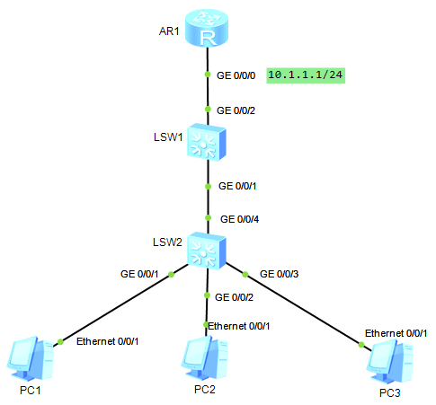
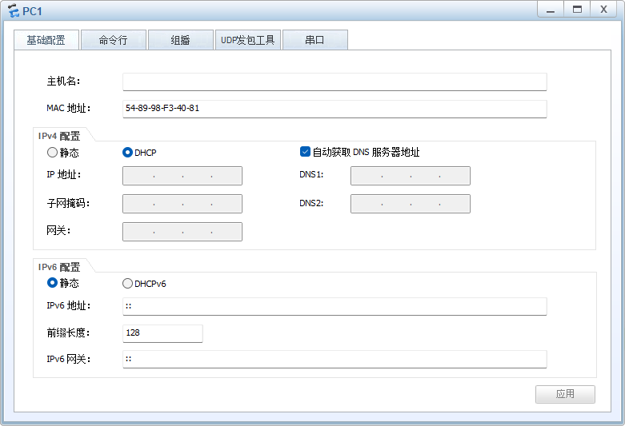

| 命令 | 说明 |
|---|---|
| dhcp enable | 启动 DHCP |
| ip pool | [pool_name] 命名地址池 |
| network [NETWORK] mask [MASK] | 指定网络 |
| dns-list [] | 指定 DNS |
| gateway-list [] | 指定网关 Gateway |
| display ip pool | 查看地址池 |
| display ip pool name [name] | 查看指定名称的地址池 |


system-view undo infor-center enable sysname AR1
配置端口 IP
inter [interface]
配置 IP 地址
ip address [network] [mask]
全局获取
dhcp select global
dhcp enable
指定 IP 地址池名称
ip pool [pool_name]
指定网络和掩码
network [network] mask [mask]
指定 DNS
dns-list [dns]
指定网关 Gateway
gateway-list [gateway]
设置租期
lease day [days] hour [hours]
排除网关、DNS 等保留地址
excluded-ip-address [start_ip] [end_ip]
return
save
主机先抓包、再释放，然后更新
ipconfig /release
ipconfig /renew
主机先抓包、再释放，然后更新
ipconfig /release
ipconfig /renew
system-view undo infor-center enable sysname [name] dhcp enable interface g0/0/0 ip address 10.1.1.1 255.255.255.0 dhcp select global quit ip pool pool1 network 10.1.1.0 mask 24 gateway-list 10.1.1.1 dns-list 8.8.8.8 lease day [days] hour [hours] excluded-ip-address [start_ip] [end_ip] return save